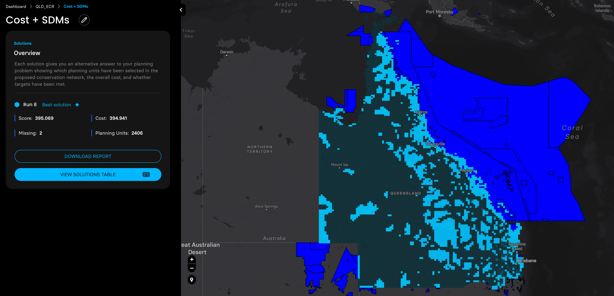

getwd()[1] "/Users/zhaoxiang/Documents/tmp/notebook-blog_old/notebooks/sp"# setwd(“/replace_this_with_your_actual_directory/ecocommons-marxan-integration-poc”)Author: Zhao Xiang, EcoCommons
Date: 2024-10-02
Using the Species distribution modeling techniques provided by the EcoCommons Platform (www.ecocommons.org.au), we produced probability distribution maps for the three Queensland endangered species: koala, brush tailed rock-wallaby, and beach stone curlew.
Then we adjusted the probability distribution maps of these three species with the planning units shapefile prepared by the Marxan MaPP, and ran four planning scenarios with a target of expanding the coverage of protected areas in QLD to 30%.
Make sure you are in the directory you want
getwd()[1] "/Users/zhaoxiang/Documents/tmp/notebook-blog_old/notebooks/sp"# setwd(“/replace_this_with_your_actual_directory/ecocommons-marxan-integration-poc”)# Set CRAN mirror
options(repos = c(CRAN = "https://cran.rstudio.com/"))
# List of packages to check, install if needed, and load
packages <- c("shiny", "sf", "terra", "ggplot2", "ggspatial", "raster", "dplyr", "httpuv", "rmarkdown", "knitr", "jsonlite", "reticulate", "htmltools", "pryr")
# Function to display a cat message
cat_message <- function(pkg, message_type) {
if (message_type == "installed") {
cat(paste0(pkg, " has been installed successfully!\n"))
} else if (message_type == "loading") {
cat(paste0(pkg, " is already installed and has been loaded!\n"))
}
}
# Install missing packages and load them
for (pkg in packages) {
if (!requireNamespace(pkg, quietly = TRUE)) {
install.packages(pkg)
cat_message(pkg, "installed")
} else {
cat_message(pkg, "loading")
}
library(pkg, character.only = TRUE)
}shiny is already installed and has been loaded!
sf is already installed and has been loaded!terra is already installed and has been loaded!ggplot2 is already installed and has been loaded!
ggspatial is already installed and has been loaded!
raster is already installed and has been loaded!dplyr is already installed and has been loaded!httpuv is already installed and has been loaded!
rmarkdown is already installed and has been loaded!
knitr is already installed and has been loaded!jsonlite is already installed and has been loaded!reticulate is already installed and has been loaded!
htmltools is already installed and has been loaded!
pryr is already installed and has been loaded!1. We get the QLD planning units from Marxan MaPP
QLD_Unit <- "qld_3species_Marxan/QLD_plannningunits/cost-surface-template.shp" #This cost-surface-template was prepared by the Marxan Mapp with a resolution of 189 Km2, which is the highest resolution Marxan Mapp can give at this scale.
QLD_Unit <- st_read(QLD_Unit)
QLD_Unit <- st_simplify(QLD_Unit , dTolerance = 0.01)
# Calculate the resolution since Marxan MaPP for visulization purpose
areas <- st_area(QLD_Unit)
areas_numeric <- as.numeric(areas)
average_area <- mean(areas_numeric)
# Convert to numeric
average_area_km2 <- average_area / 1e6
# Get the number of rows
n_rows <- nrow(QLD_Unit)
# Plot the shapefile with no fill color and number of rows in the title
ggplot(data = QLD_Unit) +
geom_sf(fill = NA, color = "gray") +
theme_minimal() +
ggtitle(paste("QLD Planning Units:", n_rows, "\n",
"Resolution of planning in square kilometers:", round(average_area_km2)))+
theme(plot.title = element_text(hjust = 0.5)) # Center the title2. I made a cost layer using the reciprocal of the distance to state-owned road as a surrogate of the cost.
The assumption is: the closer to the state owned road, the more expensive to purchase the unit.
QLD_cost_road <- st_read("qld_3species_Marxan/QLD_Cost/QLD_cost_road.shp")
# Plot the shapefile with continuous cost_road values
ggplot(QLD_cost_road) +
geom_sf(aes(fill = cost_road)) +
scale_fill_continuous(name = "Cost",
low = "lightblue", high = "red",
labels = c("0 (Low cost)", "1 (High cost)"),
breaks = c(0.01, 1)) +
theme_minimal() +
labs(title = "Cost: using the distance to road of each Unit as a proxy")+
theme(plot.title = element_text(hjust = 0.5)) # Center the title3. Biodiversity features. I used EcoCommons to produce three species’ SDM to start with.
Species 1: koala
Species 2: brush tailed rock-wallaby
Species 3: beach stone curlew
# Define the folder path where the rasters are stored
folder_path <- "qld_3species_Marxan/QLD_feature/"
# Get a list of all .tif files in the folder
raster_files <- list.files(path = folder_path, pattern = "\\.tif$", full.names = TRUE)
# Extract the species names from the file names (removing the folder path and .tif extension)
species_names <- tools::file_path_sans_ext(basename(raster_files))
# Read all raster files in one go using lapply
raster_list <- lapply(raster_files, rast) # Use rast() from terra for reading rasters
# Using QLD_Unit as the spatial vector for masking
# Transform the raster CRS to match the vector CRS and apply masking in one step
raster_list <- lapply(raster_list, function(r) {
r_transformed <- project(r, crs(vect(QLD_Unit)))
mask(r_transformed, vect(QLD_Unit))
})
# Function to convert rasters to data frames and combine them
prepare_raster_data <- function(raster_list, species_names) {
# Initialize an empty data frame
combined_df <- data.frame()
# Loop through each raster and combine them into one data frame
for (i in seq_along(raster_list)) {
# Convert raster to a data frame
raster_df <- as.data.frame(raster_list[[i]], xy = TRUE)
# Rename the third column to 'value' or any appropriate name for the raster values
names(raster_df)[3] <- "value"
# Add a column to identify the species name
raster_df$species <- species_names[i]
# Combine the raster data with the overall data frame
combined_df <- bind_rows(combined_df, raster_df)
}
return(combined_df)
}
# Prepare the combined data frame
combined_raster_df <- prepare_raster_data(raster_list, species_names)# Create the ggplot with facet_wrap to display each raster in a separate facet
ggplot(combined_raster_df, aes(x = x, y = y, fill = value)) + # Use the correct column name for fill
geom_raster()+
facet_wrap(~ species, ncol = 3) + # Adjust ncol to control the number of columns
scale_fill_viridis_c() + # You can adjust the color scale as needed
labs(title = "Species SDM") +
theme_minimal() +
theme(plot.title = element_text(hjust = 0.5))+
coord_fixed() # Maintain the correct aspect ratio4. We need to turn these SDMs to binary results (shapefies).
# Define the folder paths where the rasters and CSV files are stored
folder_path_rasters <- "qld_3species_Marxan/QLD_feature/"
folder_path_csvs <- "qld_3species_Marxan/model_evaluation/"
output_dir <- "qld_3species_Marxan/QLD_feature/Marxan_feature_input/"
QLD_Unit <- "qld_3species_Marxan/QLD_plannningunits/cost-surface-template.shp" #This cost-surface-template was prepared by the Marxan Mapp with a resolution of 189 Km2, which is the highest resolution Marxan Mapp can give at this scale.
QLD_Unit <- st_read(QLD_Unit)
QLD_Unit <- st_simplify(QLD_Unit , dTolerance = 0.01)
# Get a list of all .tif files and CSV files in the folder
raster_files <- list.files(path = folder_path_rasters, pattern = "\\.tif$", full.names = TRUE)
csv_files <- list.files(path = folder_path_csvs, pattern = "\\.csv$", full.names = TRUE)
# Extract the species names from the file names (removing the folder path and .tif/.csv extension)
species_names <- tools::file_path_sans_ext(basename(raster_files))
# Read all raster files in one go using lapply
raster_list <- lapply(raster_files, rast) # Use rast() from terra for reading rasters
# Transform the raster CRS to match the vector CRS and apply masking in one step
raster_list <- lapply(raster_list, function(r) {
r_transformed <- project(r, crs(vect(QLD_Unit)))
mask(r_transformed, vect(QLD_Unit))
})
# Prepare a named list of rasters
species_rasters <- setNames(raster_list, species_names)
species_csvs <- setNames(csv_files, species_names)
# Define UI for the application
ui <- fluidPage(
titlePanel("Interactive TSS-based threshold for the probability of presence and absence of Species"),
# Use a loop to create a row for each species
lapply(species_names, function(species) {
fluidRow(
column(3,
h4(paste("Species:", species)),
sliderInput(paste0("tss_value_", species),
"Select TSS Value:",
min = 0, max = 1, value = 0.5, step = 0.01),
actionButton(paste0("run_analysis_", species), "Run Species Analysis"),
br(),
textOutput(paste0("tpr_tnr_", species))
),
column(4,
plotOutput(paste0("plot_", species), width = "400px")
),
column(5,
plotOutput(paste0("species_plot_", species))
)
)
})
)
# Define server logic
server <- function(input, output, session) {
selected_raster <- function(species) {
species_rasters[[species]]
}
species_eval_data <- function(species) {
csv_path <- species_csvs[[species]]
if (!file.exists(csv_path)) {
showNotification(paste("CSV file for", species, "not found!"), type = "error")
return(NULL)
}
eval_data <- read.csv(csv_path)
if (!all(c("tpr", "tnr", "tpv") %in% names(eval_data))) {
showNotification(paste("Required columns missing in CSV for", species), type = "error")
return(NULL)
}
if (nrow(eval_data) == 0) {
showNotification(paste("No data found in CSV for", species), type = "error")
return(NULL)
}
eval_data$tss <- round(eval_data$tpr + eval_data$tnr - 1, 3)
return(eval_data)
}
lapply(species_names, function(species) {
eval_data <- species_eval_data(species)
if (!is.null(eval_data)) {
min_tss <- min(eval_data$tss, na.rm = TRUE)
max_tss <- max(eval_data$tss, na.rm = TRUE)
updateSliderInput(session, paste0("tss_value_", species),
min = min_tss,
max = max_tss,
value = max_tss,
step = 0.01)
}
observeEvent(input[[paste0("tss_value_", species)]], {
if (!is.null(eval_data)) {
row <- which.min(abs(eval_data$tss - input[[paste0("tss_value_", species)]]))
tpr <- eval_data$tpr[row]
tnr <- eval_data$tnr[row]
output[[paste0("tpr_tnr_", species)]] <- renderText({
paste0("TPR (Sensitivity): ", round(tpr, 3),
", TNR (Specificity): ", round(tnr, 3))
})
}
})
output[[paste0("plot_", species)]] <- renderPlot({
if (is.null(eval_data)) return(NULL)
ggplot(eval_data, aes(x = tpv)) +
geom_line(aes(y = tpr, colour = "TPR"), linewidth = 1) +
geom_line(aes(y = tnr, colour = "TNR"), linewidth = 1) +
geom_line(aes(y = tss, colour = "TSS"), linewidth = 1) +
geom_vline(xintercept = eval_data$tpv[which.min(abs(eval_data$tss - input[[paste0("tss_value_", species)]]))],
linetype = "dotted", color = "red", linewidth = 1) +
labs(title = paste("Sensitivity, Specificity, and TSS for", species),
x = "Threshold Probability Value",
y = "Value") +
scale_colour_manual(values = c("TPR" = "blue", "TNR" = "green", "TSS" = "red")) +
theme_minimal()
})
observeEvent(input[[paste0("run_analysis_", species)]], {
species_shp <- process_species(selected_raster(species), QLD_Unit, species, output_dir, input[[paste0("tss_value_", species)]])
output[[paste0("species_plot_", species)]] <- renderPlot({
ggplot() +
geom_sf(data = QLD_Unit, fill = NA, color = "grey") +
geom_sf(data = species_shp, aes(fill = feature), color = NA) +
scale_fill_viridis_c(option = "plasma") +
labs(title = paste("Species Distribution for", species),
x = "Longitude", y = "Latitude") +
theme_minimal()
})
})
})
}
process_species <- function(raster_data, planning_unit, species_name, output_dir, tss_threshold) {
raster_data_transformed <- project(raster_data, crs(vect(planning_unit)))
extracted_values <- extract(raster_data_transformed, vect(planning_unit), fun = mean, na.rm = TRUE)
names(planning_unit)[names(planning_unit) == "cost"] <- "feature"
planning_unit$feature <- extracted_values[, 2]
QLD_species <- subset(planning_unit, feature >= tss_threshold)
shapefile_base <- file.path(output_dir, species_name)
st_write(QLD_species, paste0(shapefile_base, ".shp"), delete_layer = TRUE)
return(QLD_species)
}
# Run the application
shinyApp(ui = ui, server = server)5. Plot species SDM binary shapefile outputs for double check
output_dir <- "qld_3species_Marxan/QLD_feature/Marxan_feature_input/"
# List all the shapefiles in the directory (assuming each species has its own shapefile)
species_files <- list.files(output_dir, pattern = "\\.shp$", full.names = TRUE)
species_files
# Extract species names from the filenames (you can adjust this depending on your naming conventions)
species_names <- tools::file_path_sans_ext(basename(species_files))
# Load all species shapefiles and add a species identifier
species_sf_list <- lapply(seq_along(species_files), function(i) {
sf <- st_read(species_files[i])
sf$species <- species_names[i] # Add species name column
return(sf)
})
# Combine all species into one dataset
combined_species_sf <- do.call(rbind, species_sf_list)
# Plot the unit (base map) first and overlay the species habitats without borders
combined_plot_with_unit <- ggplot() +
geom_sf(data = QLD_Unit, fill = NA, color = "grey", linewidth = 0.01) + # Base map (QLD Unit)
geom_sf(data = combined_species_sf, aes(fill = species), color = NA) + # No borders for species
scale_fill_manual(values = RColorBrewer::brewer.pal(n = length(species_names), name = "Set1")) + # Automatically assign colors
theme_minimal() +
labs(title = "Species Habitats within QLD Unit",
subtitle = paste(species_names, collapse = ", ")) + # List all species in subtitle
theme(legend.title = element_blank())
# Display the plot
print(combined_plot_with_unit)6. We can also make a species presence and absence csv table.
# Function to extract presence (1) and absence (0) from raster based on a threshold (e.g., 0.5)
extract_presence_absence <- function(raster_data, unit) {
extracted_values <- extract(raster_data, vect(unit), fun = mean, na.rm = TRUE)
presence_absence <- ifelse(extracted_values[, 2] >= 0.5, 1, 0)
return(presence_absence)
}
# Create an empty presence-absence data frame
presence_absence_df <- data.frame(puid = QLD_Unit$puid) # Assuming 'puid' is the unique identifier
# Loop through each species raster in the raster list and extract presence-absence data
for (i in seq_along(raster_list)) {
# Generate a dynamic presence column name for the current species
presence_col_name <- paste0(species_names[i], "_presence")
# Extract presence/absence data and add it to the presence-absence dataframe
presence_absence_df[[species_names[i]]] <- extract_presence_absence(raster_list[[i]], QLD_Unit)
}
# Write the final presence-absence data frame to a CSV file
output_csv <- file.path(output_dir, "presence_absence_species.csv")
write.csv(presence_absence_df, output_csv, row.names = FALSE)
# Check the CSV output
print(head(presence_absence_df)) puid beach_stone_curlew_GLM brushtailed_rockwallaby_GLM Koala_GLM
1 1 0 0 0
2 2 0 0 0
3 3 0 0 0
4 4 0 0 0
5 5 0 0 0
6 6 0 0 0

EcoCommons received investment (https://doi.org/10.3565/chbq-mr75) from the Australian Research Data Commons (ARDC). The ARDC is enabled by the National Collaborative Research Infrastructure Strategy (NCRIS).

If you use EcoCommons in your research, please cite the platform as follows:
EcoCommons Australia 2024. EcoCommons Australia – a collaborative commons for ecological and environmental modelling, Queensland Cyber Infrastructure Foundation, Brisbane, Queensland. Available at: https://data–explorer.app.ecocommons.org.au/ (Accessed: MM DD, YYYY). https://doi.org/10.3565/chbq-mr75
You can download the citation file for EcoCommons Australia here: Download the BibTeX file
© 2024 EcoCommons. All rights reserved.